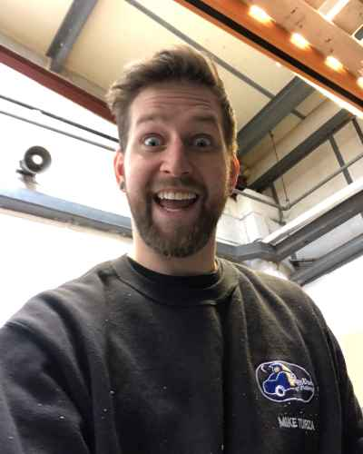
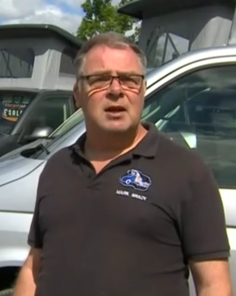
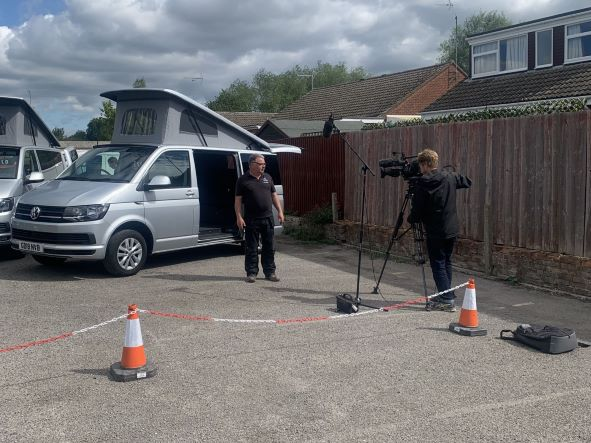
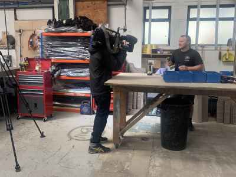

Having spent many happy years enjoying the use of our own campervans including summer trips across
Europe
and winter seasons spent
in the Alps Snowboarding/Skiing we decided it was time to take all our knowledge of ‘life in the
van’
and convert our own. So in 2009 the
Campervan Factory was born and we have gone from strength to strength since, now sourcing, designing
and
converting the perfect
Campervans.
We enjoy spending time with our Customers and are happy to explain the conversion process and the
various accessories that are available. We have a dedicated Team with a wide variety of skill sets
including mechanical, electrical, joinery and bodywork experts working
within our factory. See below to meet the team.
Meet Our Staff

Mike is the main woodworking and conversion specialist which means he's the one who makes everything
in
the conversions from building the cabinets to fitting the roofs.
Jamie helps mike out with the conversion work from time to time but he mainly does all the sowing of
the
upholstey and re-trimming of the front seats.

Mark takes care of the day to day running of the factory from making sure that the customers get the
campervan they want to checking the conversion quality and everything in between.
BBC Interview
We were also lucky enough to appear on BBC Points West in 2020 just as we came out of lock down and got
back to work.
Behind The Scenes


A few behind the scenes pictures of the filming of the BBC interview and as you can imagine we were all
pretty nervous about the whole thing!